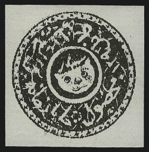
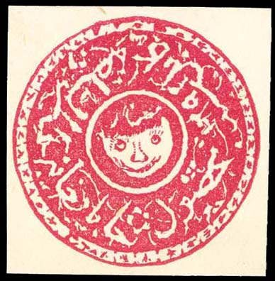
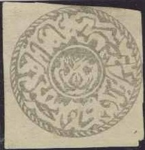
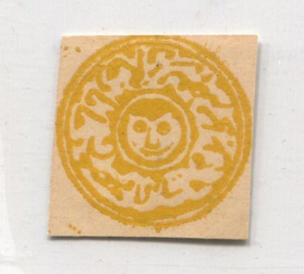
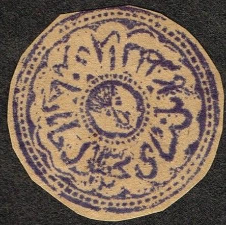
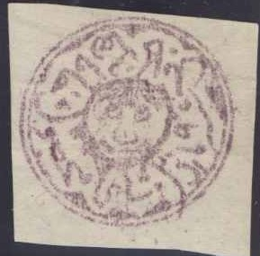
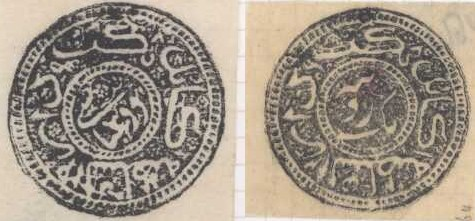
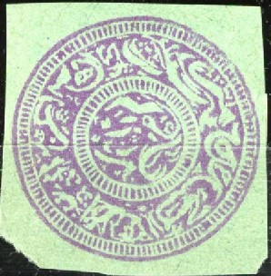
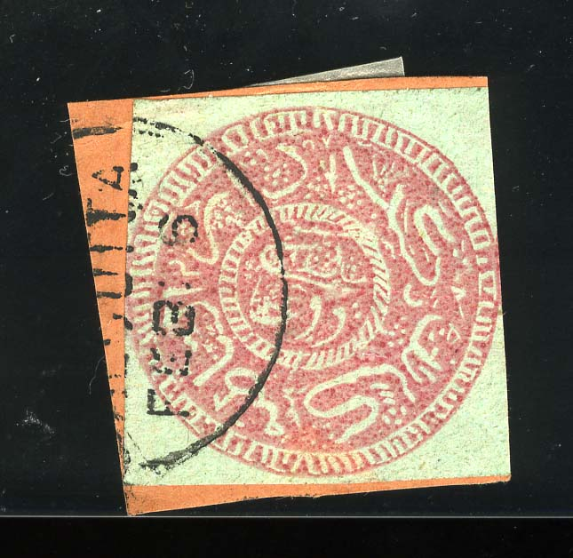

(Arabic numerals)
Return To Catalogue -Afghanistan 1879-1874 - Afghanistan 1892 onwards
Note: on my website many of the
pictures can not be seen! They are of course present in the
catalogue;
contact me if you want to purchase the catalogue.
(Arabic numerals)
The Kingdom of Kabul (Aghanistan) first issued stamps in 1870. Early designs featured a tiger's head, symbolizing the name of Amir Sher (tiger) Ali. From 1870 to 1892 the date of the Muslim year also appears. Afghan stamps of the period were issued without gum and imperforate. When used, they were mostly cancelled by cutting or tearing a piece from the stamp. Before 1928, when Afghanistan joined the Universal Postal Union, Afghan stamps were valid only for use within the country itself. Mail traveling to other countries needed the addition of Indian stamps.


Not sure if this stamp is genuine.
1 Senar black 1 Senar lilac 1 Abasi black 1 Abasi lilac
The lilac color has usually oxidized to brown.
Value of the stamps |
|||
vc = very common c = common * = not so common ** = uncommon |
*** = very uncommon R = rare RR = very rare RRR = extremely rare |
||
| Value | Unused | Used | Remarks |
| 1 Senar black | RRR | RRR | |
| 1 Senar lilac | RR | RR | |
| 1 Abasi black | RRR | RRR | |
| 1 Abasi lilac | RR | RR | |

Forgery in color red.

1875 issue (Arabic year 1293) with value indicated below in a
shield. I'm not sure if these stamps are genuine.
1 Shahi black 1 Shahi lilac 1 Senar black 1 Senar lilac 1 Abasi black 1 Abasi lilac 1/2 Rupee black 1/2 Rupee lilac 1 Rupee black 1 Rupee lilac
Value of the stamps |
|||
vc = very common c = common * = not so common ** = uncommon |
*** = very uncommon R = rare RR = very rare RRR = extremely rare |
||
| Value | Unused | Used | Remarks |
| All values | RRR | RRR | |


1 Shahi (written at bottom of the stamp), Kabul issue; just to
the right of it the Arabic numbers '1293' can be seen (reading
upwards).

1 Senar Kabul issue. The value 'Senar' can be found at the
bottom, just to the right of it the Arabic numbers '1293' can be
seen.
1 Abasi (written at bottom of stamp) Kabul issue with '1293' year
inscription just right of the bottom part of the stamp
1/2 Rupee (written at bottom of stamp) Kabul issue, with '1293'
in Arabic numerals, just right of the bottom part of the stamp
1 Rupee (written at the bottom of the stamp) Kabul issue with
with '1293' in Arabic numerals, just right of the bottom part of
the stamp
1 Shahi 1 Senar 1 Abasi 1/2 Rupee 1 Rupee
Value of the stamps |
|||
vc = very common c = common * = not so common ** = uncommon |
*** = very uncommon R = rare RR = very rare RRR = extremely rare |
||
| Value | Unused | Used | Remarks |
| 1 Shahi | R | *** | Cheapest type |
| 1 Senar | RR | R | Cheapest type |
| 1 Abasi | RR | R | Cheapest type |
| 1/2 Rupee | RR | RR | Cheapest type |
| 1 Rupee | RR | RR | Cheapest type |

Typical cancel, piece torn off from stamp and red blotch of ink
applied to rest of the stamp. According to Robert Jack
http://www.afghanphilately.co.uk/22.html, this kind of
obliteration was used in Peshawar.

Another cancel with somekind of seal. Also note the pen-dashes on
the first stamp, that I've seen on many other stamps, these seem
to tie the stamp to the envelope.

Forgery.


1 Senar Kabul issue. The value 'Senar' can be found at the
bottom, just to the right of it the Arabic numbers '94' can be
seen.

1 Abasi (written at bottom of stamp) Kabul issue with '94' year
inscription just right of the bottom part of the stamp

1/2 Rupee (written at bottom of stamp) Kabul issue, with '1294'
in Arabic numerals, just right of the bottom part of the stamp

1 Rupee (written at the bottom of the stamp) Kabul issue with
with '1294' in Arabic numerals, just right of the bottom part of
the stamp
1 Shahi 1 Senar 1 Abasi 1/2 Rupee 1 Rupee
Value of the stamps |
|||
vc = very common c = common * = not so common ** = uncommon |
*** = very uncommon R = rare RR = very rare RRR = extremely rare |
||
| Value | Unused | Used | Remarks |
| 1 Shahi | R | *** | Cheapest type |
| 1 Senar | R | R | Cheapest type |
| 1 Abasi | R | R | Cheapest type |
| 1/2 Rupee | RR | RR | Cheapest type |
| 1 Rupee | RR | RR | Cheapest type |
The colors of these stamps differ substantially. For example, the olive-grey color comes in many shades.
Two different colors

Forgeries, note the lines cancel on the first forgery, which I
have also seen on the other forgeries.

Other forgery with badly done tiger.

1 Shahi (written at bottom of the stamp)

1 Shahi (written at bottom of the stamp), second type,
inscriptions thinner.

1 Senar (written at bottom of the stamp)

1 Abasi (written at bottom of stamp)
1 Shahi (two types) 1 Senar 1 Abasi 1/2 Rupee 1 Rupee
Value of the stamps |
|||
vc = very common c = common * = not so common ** = uncommon |
*** = very uncommon R = rare RR = very rare RRR = extremely rare |
||
| Value | Unused | Used | Remarks |
| 1 Shahi | *** | *** | Cheapest type |
| 1 Shahi | R | *** | Inscriptions thinner, cheapest type |
| 1 Senar | *** | *** | Cheapest type |
| 1 Abasi | R | R | Cheapest type |
| 1/2 Rupee | RR | RR | Cheapest type |
| 1 Rupee | RR | RR | Cheapest type |

1 Abasi, the value inscription is in the inner circle
1 Abasi, 28 mm size with wider outer border.

2 Abasi, the value inscription is in the inner circle

1 Rupee, the value inscription is in the inner circle
The values 1 Abasi, 2 Abasi and 1 Rupee were
issued in 1880 with the design measuring 26 mm. All three values
were issued in violet, black, red and brown colour. For all these
colours many colour varieties exist.
In 1883 all values were re-issued on coloured paper, also blue,
green and orange stamps were issued (on coloured paper).
In 1890 the value 1 Abasi was re-issued in red, violet, brown,
violet on yellow and brown, but in slightly larger size (28 mm).
Value of the stamps |
|||
vc = very common c = common * = not so common ** = uncommon |
*** = very uncommon R = rare RR = very rare RRR = extremely rare |
||
| Value | Unused | Used | Remarks |
| All values | *** to RRR | *** to RRR | |
Typical cancels:

Most usual are pencancels are 'tearing off a piece of the stamp'.
Typical cancelling methods in different cities
Peshawar: tearing or cutting of a piece and
applying a red mark
Kabul: tearing of a piece and applying a
penstroke
Jalalabad: tearing of a piece and applying a
blue mark (or cutting a hole)
Tashkurghan: tearing of a piece and applying a
small seal-like cancel.


Other forgery.

Two forgeries with a 'CALCUTTA FEB 6' cancel

Possibly other forgeries with the same "CALCUTTA FEB 6"
cancel
For Afghanistan, 1892 onwards, click here.
{kind=link}
{kind=link}
{kind=link}
{kind=link}
{kind=link}
{kind=link}
{kind=link}
{kind=link}